Hakkımızda
ne yaparız, kiminle yaparız...
Tını
Stüdyo Tını 1997 yılında Metin Yücel tarafından Bahçelievler semtinde kayıt stüdyosu olarak kuruldu. 2003 yılında Abdurrahman Tarikci de ortak oldu. 2007 yılında mekanı ve iş kapsamını büyütüp genişletmek için mekan arayışına geçildi. Kızılay'da karar kılındı. 200 metrekare bir alanı hem kayıt, hem prova stüdyosu olarak kullanmaya karar verdiler. 6 ay süren tadilat sonucunda yalıtımı, akustiği ve teknoljisi açısından hedeflenen stüdyo ortaya çıkmış oldu.
Stüdyo
Stüdyo Tını'da 2 adet prova stüdyosu, 2 adet kayıt stüdyosu bulunmaktadır. Kayıt ve prova stüdyoları kendi kimliklerine uygun bir şekilde tasarlanmıştır ve birbirinden bağımsızdır. Teknik özelliklerinin yanı sıra müzik yapmak için her türlü detay ve konfor düşünülmüştür. Kızılay'da ve Meşrutiyet caddesi üzerinde olmasına rağmen otopark sorunu yoktur; kendine ait 3 araçlık otoparkı mevcuttur.
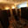 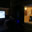 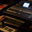 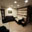 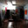 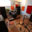
{kind=link}
{kind=link}
{kind=link}
{kind=link}
{kind=link}
{kind=link}
{kind=link}
Ne Yaparız?
Müzik içeren ya da içermeyen her türlü sesi kaydediyoruz. Mesela; seslendirme kaydı, albüm, film müziği, dizi müziği, dans müziği, sahne müziği, jenerik müziği vb.. Bu kayıtları ise dünya standardında donanım kullanarak ve yüksek kalite hedefleyerek yapıyoruz. Bu ilkelerimizden de hiç bir koşulda ödün vermiyoruz. Çünkü işimiz çok seviyor ve önemsiyoruz.
Metin & Apo & Aycan
Stüdyo Tını'da iş bölümü yaptık. Abdurrahman aranjörlük yapar, kayıtların mix ve masteringini yapar. Aycan da stüdyoyu çekip çevirir, organize eder.
Yapımlar
bugüne kadar yaptıklarımız, yapmayı planladıklarımız...
-
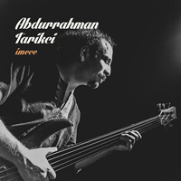
İmece
Abdurrahman Tarikci
2014
-
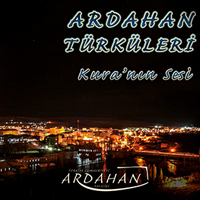
Ardahan Türküleri
Tını Sanat
2014
-
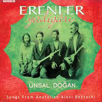
Erenler Yadigarı
Ünsal Doğan
2013
-
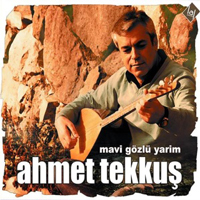
Mavi Gözlü Yarim
Ahmet Tekkuş
2013
-
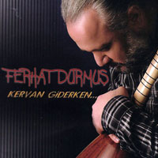
Kervan Giderken
Ferhat Durmuş
2012
-
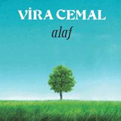
Alaf
Vira Cemal
2009
-
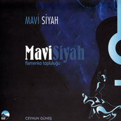
Mavi Siyah
Mavi Siyah Flamenko Topl.
2009
-
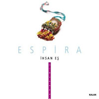
Espira
İhsan Eş
2009
-
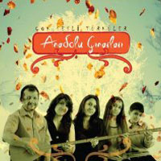
Çok Sesli Türküler
Anadolu Çınarları
2009
-
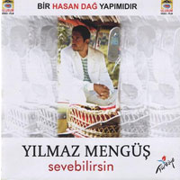
Sevebilirsin
Yılmaz Mengüş
2008
-
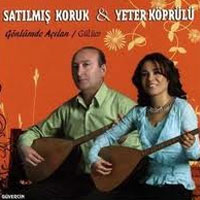
Gönlümde Açılan
Satılmış Koruk & Yeter Köprülü
2008
-
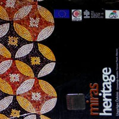
Miras | Heritage
Karma Albüm
2008
-
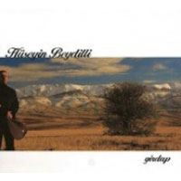
Girdap
Hüseyin Beydilli
2007
-
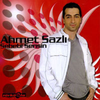
Sebebi Sensin
Ahmet Sazlı
2007
-
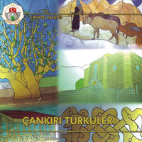
Çankırı Türküleri
Karma Albüm
2006
Ekipmanımız
bilgisayarlarımız, masamız, mutfağımız...
Kayıt Stüdyoları
-
referans monitörleri
- Adam S3X-H
- Yamaha NS10M Yakın Dinleme Monitörleri
- Infinity SM 155 3 Yollu Dinleme Monitörleri
-
mikserler
- Yamaha O2R 96 Ver. 2 Dijital Mikser
- Yamaha O1V
-
mikrofonlar
- Neumann TLM127 Kondansatörlü Mikrofon
- Brauner Phantom C Kondansatörlü Mikrofon
- AKG C414 XL (2)
- Sennheiser e904 (3)
- Audix i5 (2)
- Audix D6
- RODE NT2 Kondansatörlü Mikrofon
- AKG CK 91 Kondansatörlü Mikrofon Başlığı
- AKG C1000S Kondansatörlü Mikrofon
- AKG D 112 Dinamik Mikrofon
- AKG C 411 Kondansatörlü Mikrofon
- SENNHEISER MD 411-U Dinamik Mikrofon
- SENNHEISER e845 Dinamik Mikrofon (2)
- SHURE SM57 Dinamik Mikrofon (2)
-
ses kartları
- Lynx Aurora 8 USB
- RME Multiface
- RME Babyface
-
Mikrofon Preamfileri ve Dinamik Prosesörler
- Solid State Logic (SSL) XLpgic Alpha Channel (2)
- IGS Audio One LA 500
- IGS Audio Tubecore 500 (2)
- IGS Audio RB 500 ME
- BEHRINGER ULTRAGAIN PRO High-Precision Tube Mic/Line Pre-Amp Model MIC-2200
- BEHRINGER COMPOSER PRO Audio Interactive Dynamics Processor Model MDX-2200
- BEHRINGER MULTICOM PRO Audio Interactive Dynamics Processor model MDX-4400
- BEHRINGER ULTRAGAIN High Definition Microphone Pre-Amp/Line Driver/DI-Box Model MC-2000
- BEHRINGER DENOISER Audio Interactive Noise Reduction System Model SNR-2000
- BEHRINGER SUPPRESSOR Audio Interactive De-Esser/Feedback Prosessor Model DE-2000
- YAMAHA COMP/LIMITER GC2020BII
- BEHRINGER TUBE COMPRESSOR Vacuum Tube Audio Interactive Dynamics Prosessor with Utra-Tube Circuitri Model T1952
- BEHRINGER DUALFEX PRO Multiband Sound Enhancer/Exciter Model EX 2200
- BEHRINGER ULTRA-DYNE PRO Digital 24 Bit Dual-DSP Main Frame Model DSP 9024
- BEHRINGER ULTRA-CURVE PRO Digital 24 Bit Dual-DSP Main Frame Model DSP 8024
- YAMAHA Q1131 Graphic Equalizer
- BEHRINGER ULTRAMISER PRO Ultra-High Resulation 24-Bit Dual Engine Loudness Maximiser/Program Enchanser Model DSP 14
-
kulaklıklar
- AKG K 141 (3)
- AKG K 240DF
- Beyer Dynamic DT 860
Prova Stüdyoları
-
amfi & hoparlörler
- Randall RB200XE Bas Anfisi
- Randall Celection RG75DGE Gitar Anfisi
- Randall RX75RE Gitar Anfisi
- Tasso TA 153, 15",12",2" 3 yollu hoparlor
- Fender Bas Anfisi
- Tasso 2 yollu hoparlor
-
enstrümanlar
- Tama IS52 Davul Seti
- İstanbul Traditional Zil Seti
- Sonor F507 Davul Seti
- İstanbul Samatya Zil Seti
- Cort M600 Elektro Gitar (EMG Manyetik)
- Cort G200 Elektro Gitar (Strat Kasa 3 Single)
- SB Heavy Elektro Gitar
- Cort EVL Z4 B Bas Gitar
-
mikrofonlar
- Electrovoice NDYM 767 A dinamik kablolu solist mikrofonu (5)
- Electrovoice CO4 dinamik kablolu ens. Mikrofonu (2)
- AKG C411 Yapıştırma Ens. Mikrofonu (4)
-
güç amfisi
- Dynamic Audio DA 4400 4x400 güç amplifikatörü
-
mixer
- Behringer Eurodesk MX8000 Mikser